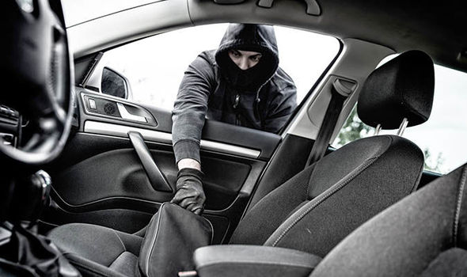

Imagen 100% real no fake del triste acontecimiento
Te subes a tu auto, enciendes el motor, tomas un fuerte respiro como lo haces en tu dia a dia. Luego de esto, sales de condominio, en ese preciso momento ves un auto frente a ti,
el auto de color azul, tiene los vidrios polarizados, justo en ese momento pienzas: "que raro que alguien se estacione justo frente a la entrada cuando hay tanto espacio". Cuando te das cuenta
ya es demasiado tarde, el auto acelera para bloquearte el paso, le bocinas desconcertado penzando que simplemente esta manejando mal, seguido de esto un hombre enmascarado sale del auto apuntandote
con un arma, rompe tu ventana y te obliga a salir. Tratas de pelear pero un golpe en la cabeza es suficiente para noquearte.
Despiertas unos minutos despues de y piensas "Mierda solo yo tengo la mala suerte de que me pasen estas cosas". Abres los ojos pero no puedes ver absolutamente nada, estas vendado, tratas de soltar un suspiro pero tienes un trapo en la boca y te das cuenta que tienes las manos atadas.
Escuchas que el motor del auto se esta deteniendo, abren la puerta y escuchas el viento, pero ese viento tiene un sonido muy particular, relacionas el sonido con algunos recuerdos, cuando ibas de pequeño a jugar al bosque,
ese bosque donde a tu madre no le gustara que fueras porque te ensuciabas al jugar.
Los sujetos te sacan del auto y sin decir una sola palabra te amarran a un arbol no muy grueso, escuchas que empiezan a alejarse poco a poco, pasan algunos minutos y no escuchas absolutamente nada mas que ese viento tan pacifico.